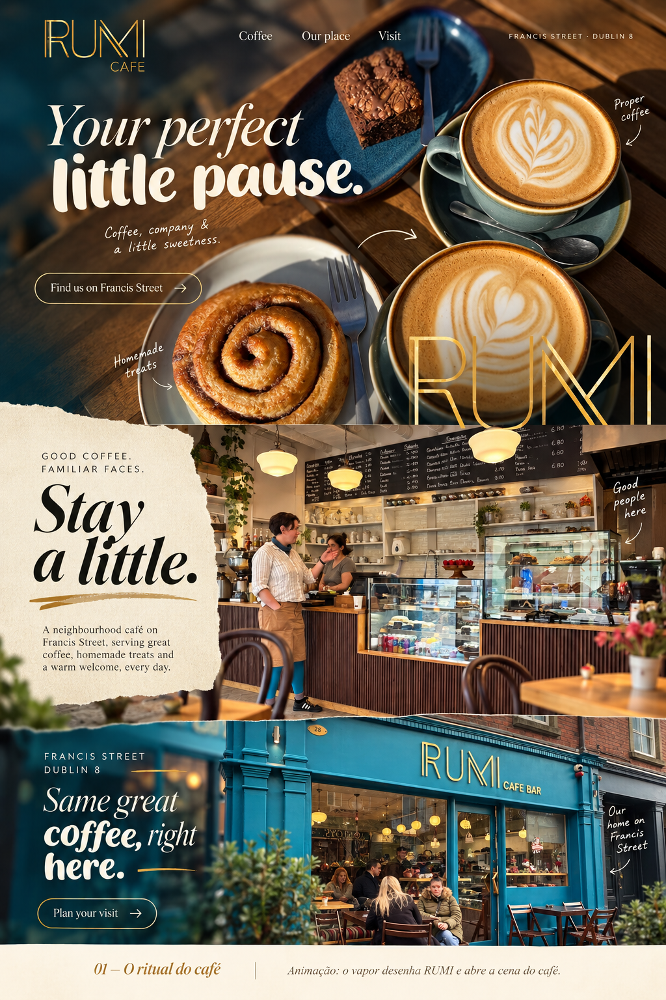

O ritual do café.
Direção aprovada para o Rumi Cafe Francis Street: teal, dourado, calor humano e fotografia real. Um projeto feito para ser visto, percorrido e implementado.
Abrir estudo animado ↗Abrir guia PDF ↗Ler README ↗Da escolha ao site.
O modelo 1 foi mantido. A implementação usa texto vivo, fotos reais nas seções e hero de campanha sem lettering embutido. Fontes e assets estão locais.



Maquetes e movimento.
Pranchas e vídeo são composições ilustrativas; não são capturas do navegador.


Fotografias originais.


O site está em inglês; os documentos de implementação estão em português. Horários completos e preços aguardam confirmação. As fotos originais são preservadas; o hero desktop é uma composição de campanha derivada da mesa real. Este kit não foi publicado.